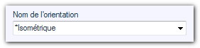

Opération possible sur les pièces ou les assemblages. 
Cette opération permet de choisir une orientation SOLIDWORKS standard .
La sélection des orientations se fait par le biais du menu déroulant :

Les orientations de vue personnalisée ne s'affichent pas dans le menu déroulant, il faut dans ce cas saisir manuellement le nom de la vue.
Exemple : L'orientation appliquée sur tous les documents sélectionnés sera "Isométrique".
